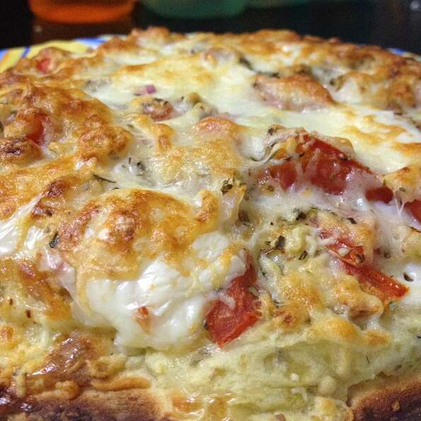

A delicious cheesy treat that's simple to make and will only take 45 minutes!
This recipe will yield 8 servings; a yummy brekky that the entire family can enjoy!
Ingredients:
- 1 (8 ounce) package refrigerated crescent rolls
- 1 cup frozen hash brown potatoes, thawed
- 1 cup shredded mozzarella cheese
- 5 eggs, beaten
- ¼ cup milk
- ½ teaspoon salt
- ½ teaspoon ground black pepper
- 2 tablespoons grated Parmesan cheese
Steps:
- Preheat oven to 375 degrees F (190 degrees C). Grease a 10x15-inch baking pan.
- Unroll crescent roll dough and press into the prepared baking pan. Sprinkle hash browns and mozzarella cheese over the crescent roll dough.
- Whisk eggs, milk, salt, and black pepper together in a bowl; pour over potato-cheese layer. Top with Parmesan cheese.
- Bake in the preheated oven until eggs are set in the middle and cheeses are melted, about 30 minutes.
Top of Page
Return To Main Page